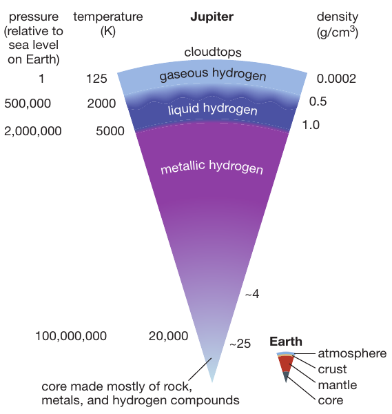

Reading: Chapter 10, Earth's atmosphere (NASA)
Following the spirit of last lecture, we will focus today on the physical processes that shape the atmosphere of planets. Once again, the physics is the same everywhere, but the specific conditions (composition, distance to the star, etc.) of each body in the Solar system - and in exoplanetary systems! - determine the variety of atmospheric conditions we can find.
And also in analogy with planetary geology, comparative planetary atmosphere studies can teach us about our own atmosphere, and the massive damage that ∼ 200 years of industrial extraction of fossil fuels is doing to it. So while it may seem wasteful to study the atmospheres of other planets, it's actually one of the best possible ways to understand the physics of the complex and chaotic atmosphere on Earth, which we cannot replicate at scale in a lab.
Atmosphere vs. envelope
- Atmosphere: partially transparent to some light (photons coming from this layer have at most one interaction with the gas before free-streaming outwards). The definition of atmosphere is thus related to light-matter interactions.
- Envelope: we have discussed planet formation as a bottom-up process mediated by disks, where a solid core is formed first, and then accretes gravitationally attracted mass. One can think of everything outside the core as an envelope, which however can be solid (e.g., Earth's mantle) and this statement doesn't say anything about its radiative properties (no transparency requirement)
Atmospheres
The Earth

The Earth's atmosphere is a thin layer of gas, cold enough to be in the form of molecules:
- Nitrogen N2 makes the majority of it
- Oxygen in the form of O2 molecules is ∼ 16%
- Other molecules, such as CO2, H2O, CO
Throughout the ∼ 4.5 billion-year-long history of the planet, the composition of the atmosphere has evolved: early bombardments by comets, long periods of volcanic eruptions, biological processes, etc. have modified the chemical composition of the atmosphere, and consequently the climate on the surface. We have multiple geological and fossil evidence (including "carrots" from the ice caps at the poles, which literally froze in time conditions). Together with the process of surface erosion, this is shows that the atmosphere of a planet is connected to its interior.
What if there is no "surface"?

So far you probably imagined surfaces as something roughly solid. However, some planets do not have any solid surface at all: the gas giants! However, we can think of a "surface of last photon scattering", or in other words, the radius above which photons can freely escape. This is just a statement on the photons propagation, not the state of matter, which can be in any phase it wants!
Although gas giants have formed starting from solid planetesimal cores, these may have since melted/vaporized under the extreme pressure of all the gas they have accreted. This is usually still debated, because it depends on the properties of matter that is under extreme pressure (the weight of the huge planets), cold, and with the specific chemical composition of the giant planets.

Even if these planets are mostly or completely in gas phase, you should not imagine them as a fluffy cloud that it is easy to go through: when the Galileo space-craft plunged into Jupiter, it dove only down to 200km from the surface before being crushed by the pressure of the gas.
As we will discuss in more detail when dealing with stellar structure, what holds planets (and stars) up against their own weight and prevent them from collapsing to a single point is the pressure gradient, that is the change in pressure with depth. The gas at the bottom is compressed, and has higher pressure than the gas above, and the difference in pressure between two layers is exactly the balancing the weight of that layer.
Another force that shapes the gas giants is the centrifugal force. This is an apparent force in the non-inertial frame co-rotating with the planet (which corresponds in an inertial non-rotating frame to the centripetal force that keeps the velocity accelerating and changing direction in the rotating motion). Gas giants typically spin fast enough that they are visibly deformed from the spherical shape expected for planets.